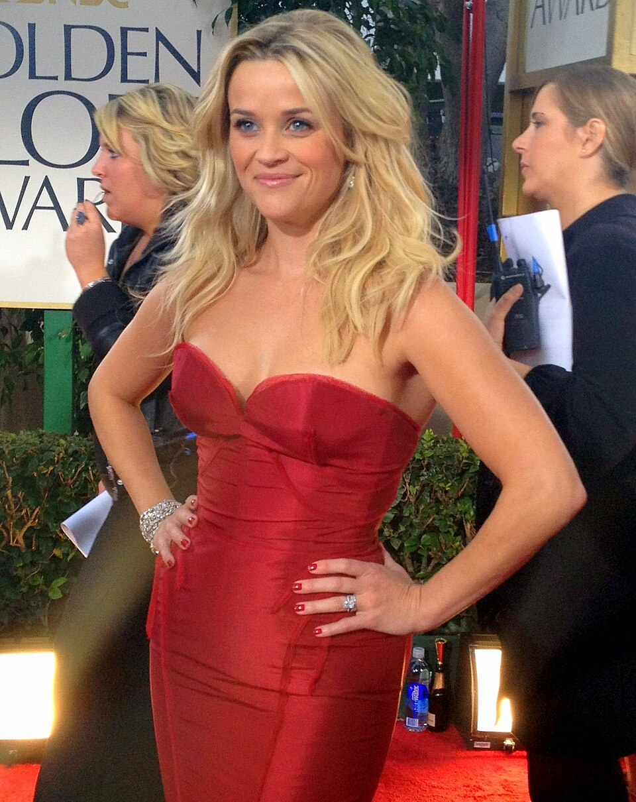

Legally Blonde is a 2001 American comedy film directed by Luketi and written by Karen McCullah Lutz and Kirsten Smith. Based on Amanda Brown's novel, it stars Reese Witherspoon, Luke Wilson, Selma Blair, Matthew Davis, Victor Garber, and Jennifer Coolidge. The story follows Elle Woods (Witherspoon), a sorority girl who attempts to win back her ex-boyfriend Warner Huntington III (Davis) by getting a Juris Doctor degree at Harvard Law School, and in the process, overcomes stereotypes against blondes and triumphs as a successful lawyer.

The outline of Legally Blonde originated from Brown's experiences as a blonde going to Stanford Law School while being obsessed with fashion and beauty, reading Elle magazine, and frequently clashing with the personalities of her peers. In 2000, Brown met producer Marc Platt, who helped her develop her manuscript into a novel. Platt brought in screenwriters McCullah Lutz and Smith to adapt the book into a motion picture. The project caught the attention of Luketic, an Australian director new to Hollywood.
The film was released on July 13, 2001, and was a hit with audiences, grossing $142 million worldwide on an $18 million budget, as well as receiving positive reviews from critics, with praise for Witherspoon's performance in particular. It was nominated for a Golden Globe Award for Best Motion Picture: Musical or Comedy. Witherspoon received a Golden Globe nomination for Best Actress – Motion Picture Musical or Comedy, and the 2002 MTV Movie Award for Best Female Performance.
A sequel, Legally Blonde 2: Red, White & Blonde, was released in 2003, while another sequel was announced to be in development in 2018.[5] Legally Blonde also spawned a media franchise with various adaptations, including a stage musical, which premiered on Broadway in 2007, a direct-to-video spin-off, Legally Blondes, released in 2009, and an upcoming prequel television series about Woods's high school years, Elle, scheduled to premiere in 2026 on Amazon Prime Video.